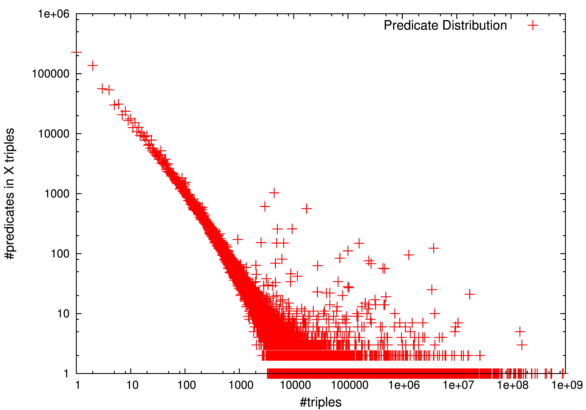

LOD-a-lot
A Single-File Enabler for Data Science
Wouter Beek w.g.j.beek@vu.nl, Javier Fernández javier.fernandez@wu.ac.at, Ruben Verborgh ruben.verborgh@ugent.be

What is the cost of access?

Datasets used by us

ISWC research papers use 2 datasets on average.
What is the cost of access?
You need a €10K+ cluster!
Low-cost LOD access
- 1 file
- 28,362,198,927 unique triples
- >650K data documents
- 524 GB of disk space
- 15.7 GB of RAM
- €305,- hardware cost
How did we do it?
(1/3) LOD Laundromat
 Beek & Rietveld et al. 2014, LOD laundromat:
a uniform way of publishing other people's dirty
data
Beek & Rietveld et al. 2014, LOD laundromat:
a uniform way of publishing other people's dirty
data
(2/3) Header Dictionary Triples (HDT)
(3/3) Linked Data Fragments (LDF)

 Verborgh & Vander Sande et al.
2014, Web-Scale Querying through Linked Data
Fragments
Verborgh & Vander Sande et al.
2014, Web-Scale Querying through Linked Data
Fragments

A Single-File Enabler for Data Science
Capabilities
- Enumerate terms
- Query for Triple Patterns
- Retrieve metrics
Data Science use cases
- obtaining statistics
- enumerating schema
- identity closure
- graph navigation
- query planning
- random sampling for Machine Learning
- generating specialized indexes
- versioning
- analyzing inconsistencies
Use case 1/3: Obtaining statistics
| triples | 28,362,198,927 |
| subject | 3,214,347,198 |
| predicates | 1,168,932 |
| objects | 3,178,409,386 |
| subject & object | 1,298,808,567 |
Use case 1/3: Distribution of predicates
{kind=link}
Use case 2/3: Enumerating schema
comparisonUse case 3/3: Identity closure
558,943,116 owl:sameAs triples

Auto-detect communities
Community 1: Obama, the person
http://als.dbpedia.org/resource/Barack_Obama
http://am.dbpedia.org/resource/ባራክ_ኦባማ
http://data.nytimes.com/obama_barack_per
http://nl.dbpedia.org/resource/Barack_Obama
http://rdf.freebase.com/ns/m.02mjmr
http://viaf.org/viaf/52010985
http://yago-knowledge.org/resource/Barack_Obama
Community 2: Obama, the administration
http://dbpedia.org/resource/Administration_of_Barack_Obama
http://dbpedia.org/resource/Barack_Obama_Cabinet
http://dbpedia.org/resource/Barack_Obama_presidency
http://rdf.freebase.com/ns/m.05b6w1g
http://wikidata.dbpedia.org/resource/Q1379733
http://yago-knowledge.org/resource/Presidency_of_Barack_Obama
Thank you!
Try it out yourself: http://purl.org/HDT/lod-a-lot
Wouter
Beek w.g.j.beek@vu.nl
Javier
Fernández javier.fernandez@wu.ac.at
Ruben
Verborgh ruben.verborgh@ugent.be